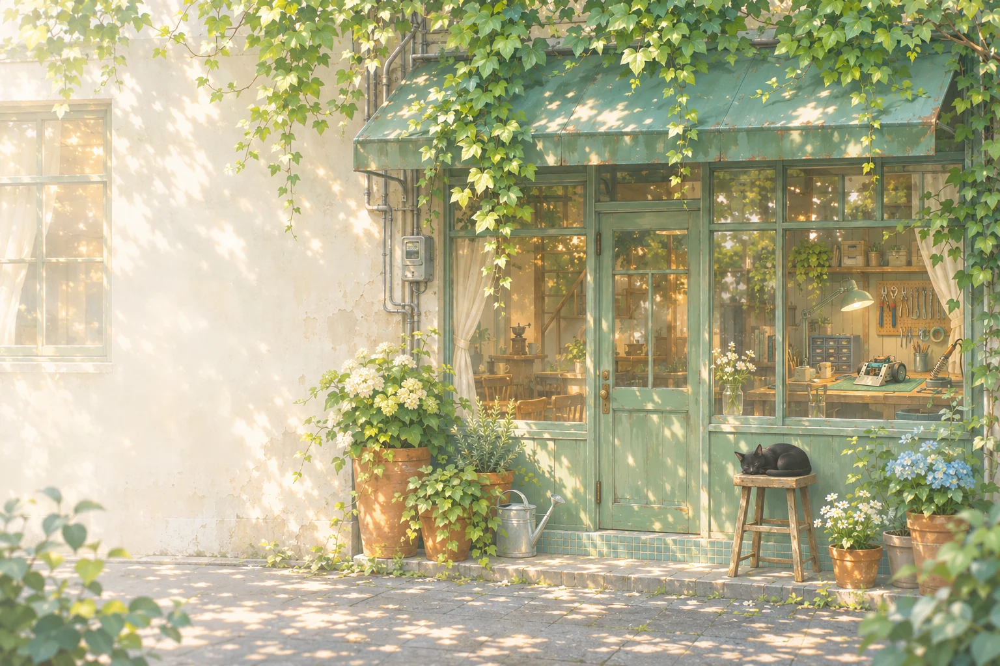

WELCOME TO MY LITTLE ATELIER
A little curiosity.
A lot of making.
I’m Ray, a mechanical engineer in the making.
Turning sketches, code, and a few too many
cups of coffee into things that work.

a little company
for the journey ⤴
Good things start with “what if?”
✳01 / FROM THE WORKBENCH
Things I’ve made.
A few favorite projects. Real parts,
real constraints, a lot of iteration.
Showing all 4 projects

STAY CURIOUS
and make a few mistakes.
02 / THE PERSON BEHIND THE PARTS
Engineer by study.
Maker by nature.
I’m studying mechanical engineering at Georgia Tech, drawn to the place where physical things meet digital ideas.
Some days that means running regression models on automotive lightweighting. Others, it’s machining a robot chassis, wiring a controller, or helping someone turn their first CAD model into a real part.
I like the whole process. The rough sketch. The stubborn problem. The moment it finally works.
03 / NOTES IN THE MARGIN
How I like to work.
NOTE 001Think with your hands.
A prototype asks better questions than a perfect rendering. Build something early, learn what feels wrong, and let the next iteration answer.
NOTE 002Follow the small details.
A tolerance, a fastener, a wire that needs a little more room. The small decisions are often where a design starts to feel considered.
NOTE 003Leave room for play.
A controller built for a favorite game. A robot that fits in your hand. Personal projects keep the curiosity alive, and the learning follows.
ALWAYS UP FOR AN INTERESTING PROBLEM